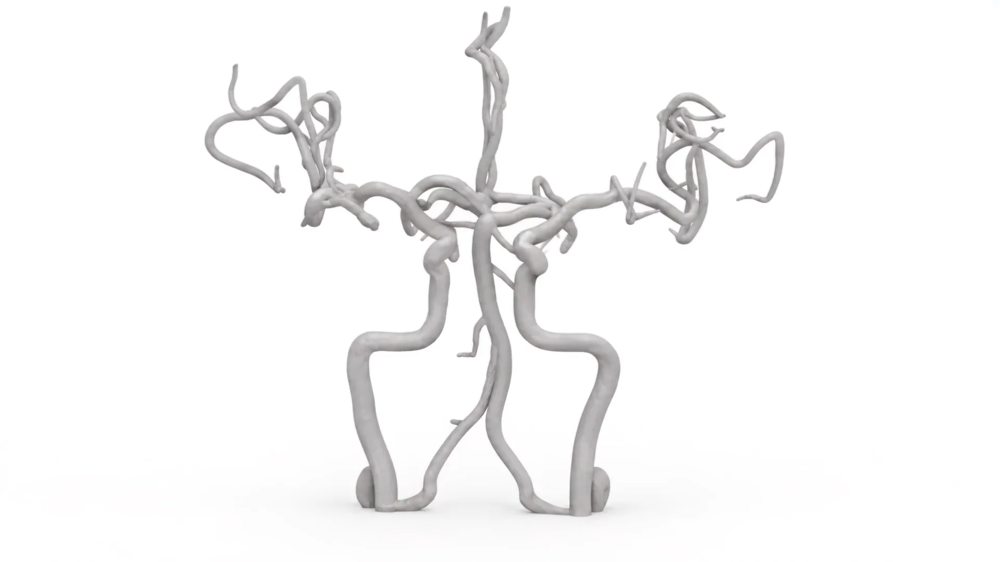
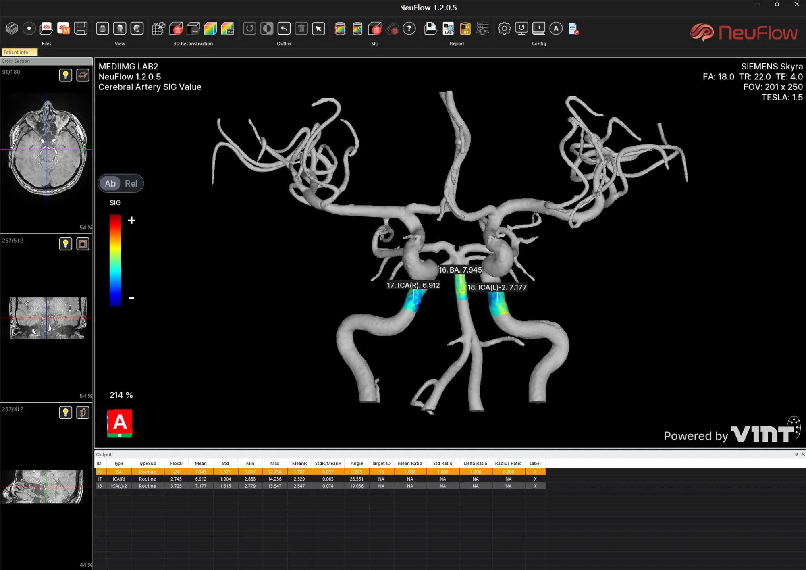
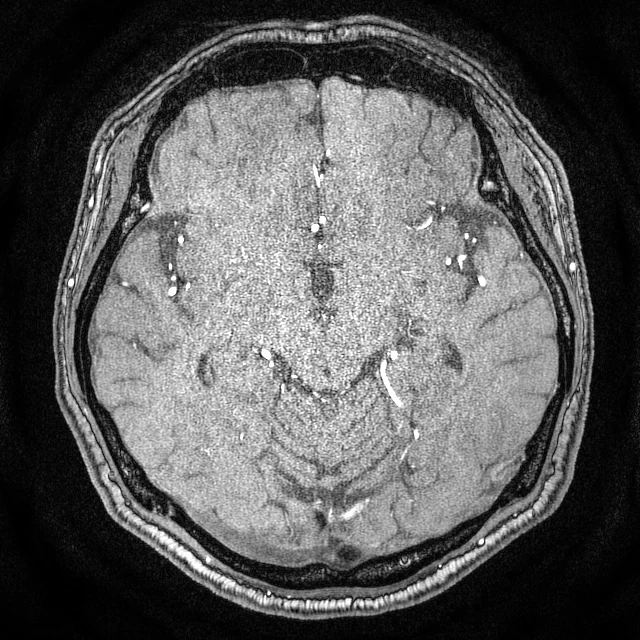
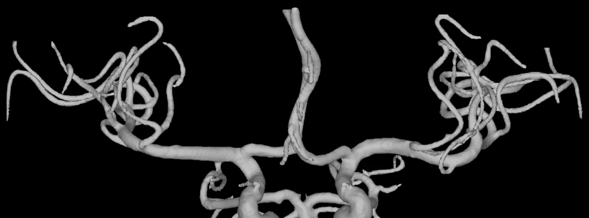
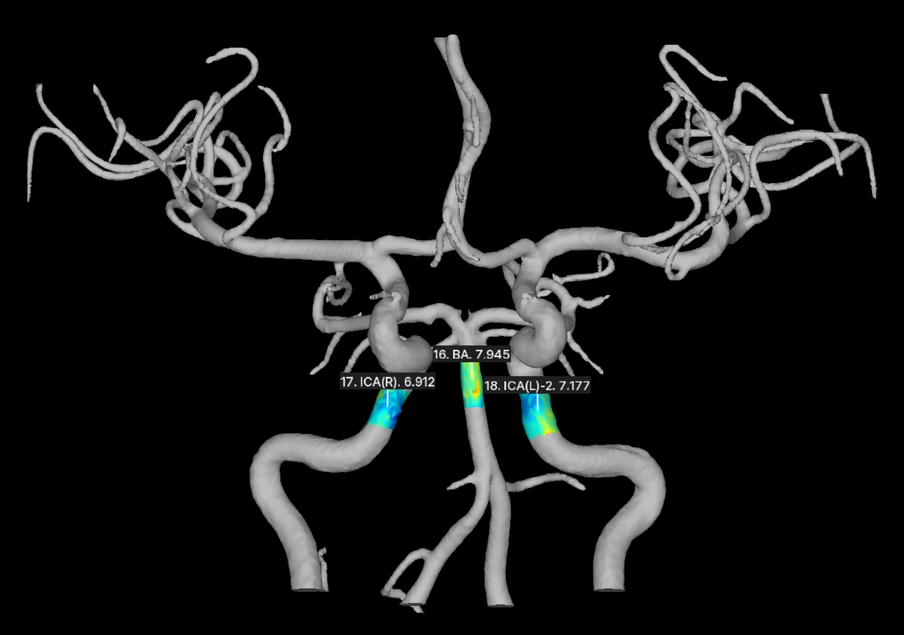
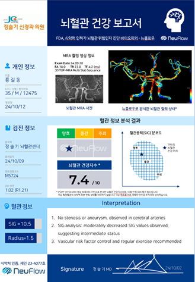

뇌혈관에서,데이터를 얻을 수 있을까?
TOF-MRA 소스 이미지에서 3차원으로 된 상세한 혈관 상태 정보를 얻을 수 있다면? 메디이미지의 기술은 이 질문에서 시작했습니다.
SIG란 무엇인가요?
NeuFlow는 TOF-MRA 영상의 혈관 경계 부근에서 나타나는 신호(SIG, Signal Intensity Gradient) 변화를 분석해 혈관별 정량정보를 얻습니다.
혈액이 혈관벽을 따라 흐를 때 작용하는 힘을 혈관벽전단응력이라고 합니다. SIG는 이와 관련된 혈류역학적 특성을 이해하는 대리지표로 연구되어 왔습니다.
SIG는 단순히 특정 질환을 판별하는 요소가 아닌, 다양한 뇌혈관 질환의 원인 및 예후 판정에 사용할 수 있는 바이오마커 플랫폼입니다.
근거 논문 보기- 01혈류flow
- 02혈관벽전단응력wall shear stress
- 03SIGsignal intensity gradient
VINT는 TOF-MRA를 통해내부 혈관 상황을 반영합니다.

연출 영상 · 흑백 혈관 영상이 색과 숫자가 되는 과정을 표현
- 01
측정과 시각화를 동시에
뇌혈관전단응력과 관련된 정보를 측정하면서 동시에 시각화합니다.
- 02
새로운 뇌혈관 바이오마커, SIG
기존의 방법보다 더 쉽고 빠르게 SIG를 제공합니다.
- 03
환자와의 커뮤니케이션
검사기록지를 통해 환자와 보다 편리하게 소통하도록 돕습니다.

VINT는 어떻게 작동하나요?
단순한 과정으로, 추가 설정 없이 쉽고 빠르게 SIG를 계측합니다.
-
01
DICOM 가져오기
DICOM을 가져오면 자동 분할을 진행하고 3D 혈관 객체를 생성합니다.


TOF-MRA 소스 이미지 
3D 혈관 객체 -
02
ROI 선택과 혈관명 표시
혈관의 관심 영역(ROI)을 선택하고 혈관명을 표시합니다.

-
03
보고서 생성
보고서를 생성해 환자와 효과적으로 소통합니다.

보고서 예시(샘플) · 항목은 제품화 과정에 따라 달라질 수 있음
보고서 예시(샘플) · 항목은 제품화 과정에 따라 달라질 수 있음
결과의 의미는 영상 조건과 환자의 상태를 고려해 전문 의료인이 판단합니다.